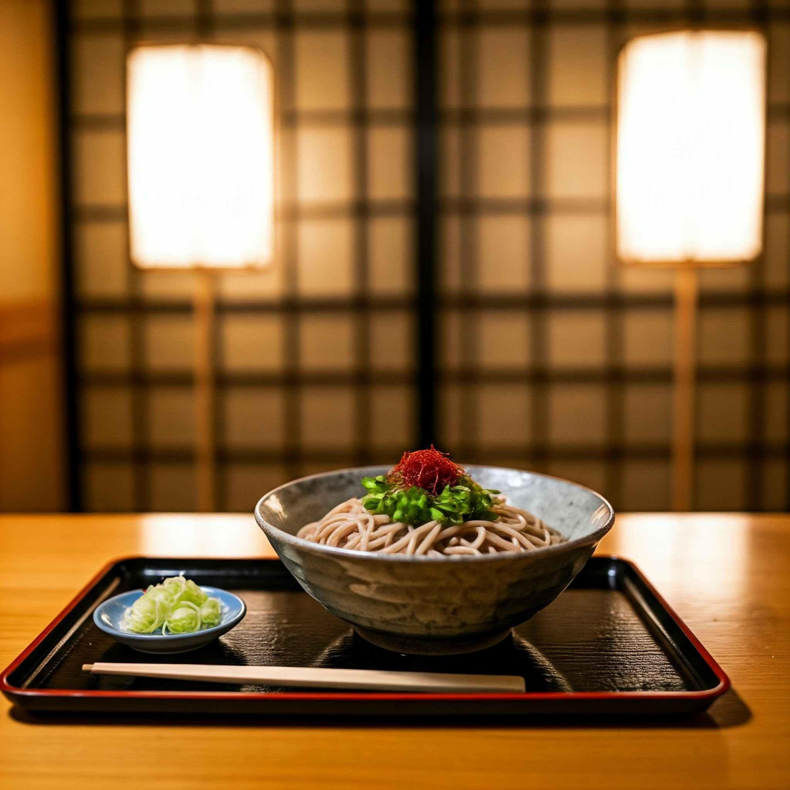

創業100年以上の歴史を持つ当店は、大田原の地で代々そばの伝統を守り続けてまいりました。
初代から受け継がれる製法と、地元の食材へのこだわりは今も変わることなく、多くのお客様に愛され続けております。
手打ちそばと天ぷら、うなぎなど、日本の伝統的な味わいを今に伝える料理の数々を、ぜひご堪能ください。

創業当時の片岡屋（大正時代）


月～土：11:00～14:00 / 18:00～21:30
※ご予約がない場合20:00閉店
日曜・祝日：休業
創業100年以上の歴史を持つ当店は、大田原の地で代々そばの伝統を守り続けてまいりました。
初代から受け継がれる製法と、地元の食材へのこだわりは今も変わることなく、多くのお客様に愛され続けております。
手打ちそばと天ぷら、うなぎなど、日本の伝統的な味わいを今に伝える料理の数々を、ぜひご堪能ください。
創業当時の片岡屋（大正時代）
毎日店内で丁寧に打ち上げる自慢のそば。風味と腰の強さにこだわり続けています。
季節の野菜を中心に、サクッと揚げた天ぷらは、そばとの相性も抜群です。
創業以来受け継がれる秘伝のタレで仕上げる、当店自慢のうな重をご提供しています。